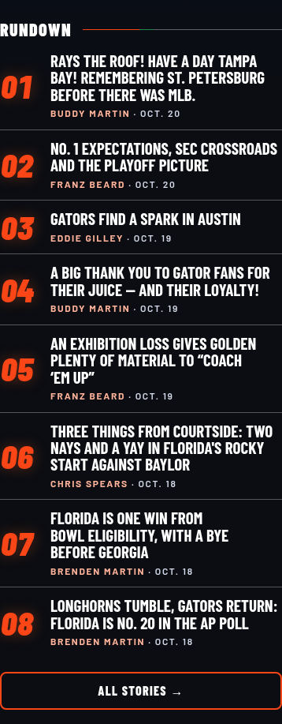
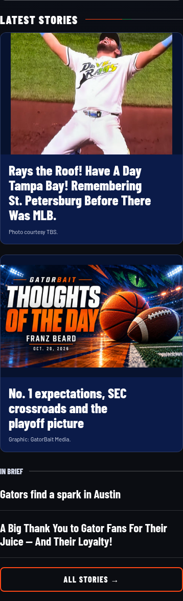

Prepared for review · no live changes
A shorter front page with a clearer rhythm
One lead, two current image cards, then two briefs. The complete archive stays one tap away. Writer/date repeats disappear from the HTML cards; photo credits remain. Approved artwork retains its printed text.
390 px comparison
Current live source — story panel
Prepared candidate — story panel
Top of the page
Chromium checks passed at all four widths with real loaded images, five unique stories, correct order, no overflow and unchanged lead/palette variables. Missing-credit and failed-image checks preserve the headlines. Captured-source local verification; live production and physical iPhone checks remain with the controller.
Verification results · Source, attribution evidence and rollback